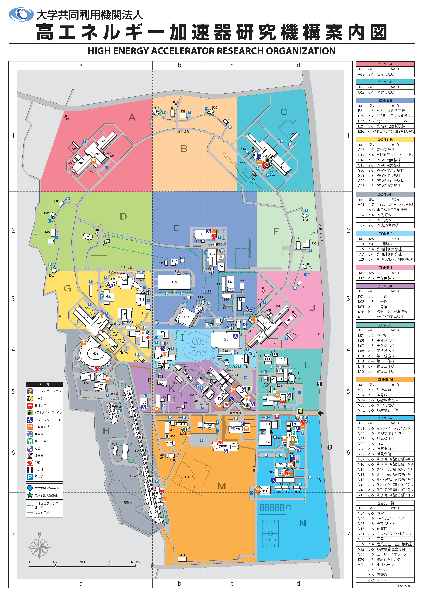

背景は KEK 公式案内図（Ver.2026.05）。赤ピンは 2026-08-18〜19 の MCA 測定地点。
座標は tables/測定地点マスタ.csv で編集し、
python3 _build_site_map.py で再生成する。
05_施設図/Campus_Map_J_2026_05.pdf
（大学共同利用機関法人 高エネルギー加速器研究機構案内図）figures/campus_official_2026_05.png

ピンまたは表の行をクリックで対応付け。座標の微調整は CSV の 地図_x_pct, 地図_y_pct（画像左上=0,0、右下=100,100）。
| 地点 | 棟No | 番地 | h [m] | z [m] | d [m] | 内外 | ROI net CPS |
|---|---|---|---|---|---|---|---|
| 管理棟2階 | L01 | d-5 | 30 | 4.0 | 0 | 屋内 | 0.477 |
| 管理棟1階 | L01 | d-5 | 30 | 0.0 | 0 | 屋内 | 0.341 |
| linac | H02 | a-5~7 | 30 | 0.0 | 0 | 屋内 | 0.056 |
| 地上（屋外） | — | d-5付近 | 30 | 0.0 | 0 | 屋外 | 0.387 |
| 放射線棟 BT | — | b-3付近 | 30 | 0.0 | 0 | 屋内 | — |
| 白根山（昨年） | — | — | 2000 | 0.0 | 0 | 屋外 | — |
| 筑波山（昨年） | — | — | 907 | 0.0 | 0 | 屋外 | — |